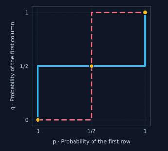
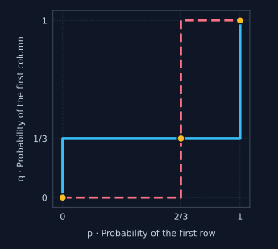
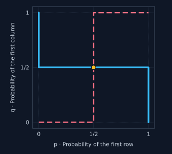

The mixed extension lets us analyze random behavior using the same equilibrium idea as before. Each player chooses a distribution, and we ask whether anyone can obtain a higher expected payoff by changing her own distribution while the others keep theirs fixed.
Chapter 1
Static Games with Perfect Information
Modelling simultaneous strategic interactions — and finding rational predictions for play.
05 — Nash Equilibrium in Mixed Strategies
Section 6
Nash Equilibrium in Mixed Strategies
A. Motivation
§ 6.1
Definitions and the Indifference Principle
Definition — No Profitable Unilateral Deviation
A mixed profile $\sigma\in\Sigma$ is a Nash equilibrium if, for every player $i$, her chosen distribution performs at least as well as every alternative distribution against $\sigma_{-i}$:
$$\forall i\in\{1,\ldots,N\},\quad\forall\tau_i\in\Sigma_i,\qquad g_i(\sigma_i,\sigma_{-i})\geq g_i(\tau_i,\sigma_{-i})$$
On the left, player $i$ keeps her proposed strategy $\sigma_i$. On the right, she changes it to $\tau_i$. The opponents’ profile is the same on both sides. Equilibrium requires that this unilateral change never raises her expected payoff.
The comparison is made ex ante: after the mixed strategy has been specified, but before the random action is drawn. The player evaluates the expected payoff of her distribution.
Proposition — Checking Pure Deviations Is Sufficient
It is enough to check deviations to pure actions:
$$\forall i,\quad\forall t_i\in S_i,\qquad g_i(\sigma_i,\sigma_{-i})\geq g_i(t_i,\sigma_{-i})$$
This is equivalent to the definition with all mixed deviations. The reason is multi-linearity: the payoff from a mixed deviation is a weighted average of the payoffs from its pure actions. If none of those actions improves on the proposed payoff, their weighted average cannot improve on it either.
Best Responses — The Same Equilibrium Condition
The best-response set $BR_i(\sigma_{-i})$ contains all mixed strategies that maximize player $i$’s expected payoff against the opponents’ given profile.
$$BR_i(\sigma_{-i})=\operatorname*{arg\,max}_{\tau_i\in\Sigma_i}g_i(\tau_i,\sigma_{-i})$$
$$\sigma\text{ is a Nash equilibrium}\quad\Longleftrightarrow\quad\sigma_i\in BR_i(\sigma_{-i})\ \text{for every }i$$
As in pure strategies, an equilibrium is a profile of mutual best responses. Here a best response may itself be a distribution.
Proposition — The Strong Indifference Principle
A profile $\sigma$ is a Nash equilibrium if and only if both conditions below hold for every player.
i
All actions used with positive probability give the same payoff.
$$\forall s_i,t_i\in\operatorname{supp}(\sigma_i),\qquad g_i(s_i,\sigma_{-i})=g_i(t_i,\sigma_{-i})$$
The equality is evaluated against the opponents’ equilibrium distributions. If the player uses several actions, each must give the same expected payoff.ii
An unused action cannot give a higher payoff.
$$\begin{gathered}\forall s_i\in\operatorname{supp}(\sigma_i),\quad\forall t_i\notin\operatorname{supp}(\sigma_i),\\g_i(t_i,\sigma_{-i})\leq g_i(s_i,\sigma_{-i}).\end{gathered}$$
An action outside the support may tie with the actions in the support, but it must not do better. Equality among the used actions alone is therefore not a complete equilibrium check.Proof Exercise · Strong Indifference Principle
The support explicitly asks you to prove the strong indifference principle.
Task: Prove both directions: an equilibrium satisfies conditions (i)–(ii), and those conditions rule out every profitable deviation.
1
Necessity: a used action cannot be worse than another action.
Assume that $\sigma$ is an equilibrium. Suppose a player uses $s_i$ with $\sigma_i(s_i)>0$, but some action $t_i$ gives a strictly higher payoff against $\sigma_{-i}$. Move the probability on $s_i$ to $t_i$, leaving all other probabilities unchanged. The expected-payoff increase is
$$\sigma_i(s_i)\bigl[g_i(t_i,\sigma_{-i})-g_i(s_i,\sigma_{-i})\bigr]>0.$$
This would be a profitable unilateral deviation, contradicting equilibrium. Hence each used action must give a maximal payoff. All used actions therefore tie, and no unused action can give more. These are conditions (i) and (ii).
2
Sufficiency: any deviation is an average of payoffs no larger than the common payoff.
Now assume (i) and (ii). For player $i$, denote the common payoff of the supported actions by $v_i$. Because all probability is assigned to these actions,
$$g_i(\sigma_i,\sigma_{-i})=\sum_{s_i\in\operatorname{supp}(\sigma_i)}\sigma_i(s_i)v_i=v_i.$$
Every pure action gives at most $v_i$: the supported ones give exactly $v_i$, and (ii) bounds the others. For any mixed deviation $\tau_i$,
$$g_i(\tau_i,\sigma_{-i})=\sum_{t_i\in S_i}\tau_i(t_i)g_i(t_i,\sigma_{-i})\leq\sum_{t_i\in S_i}\tau_i(t_i)v_i=v_i.$$
Thus no player can profitably deviate. Since this argument holds for every player, $\sigma$ is a Nash equilibrium.
Method — Search over Supports
1
Choose a possible support for each player.
Specify which actions receive positive probability. Include singleton supports: one or more players may play pure strategies at equilibrium.
2
Impose indifference within each support.
Equate each player’s expected payoffs from the actions she uses. Add the probability restrictions: probabilities in the proposed support must be positive and must sum to $1$.
3
Check all unused actions.
Against the candidate opponents’ distributions, each action outside the support must give no more than the common supported payoff. Reject a candidate that fails this comparison.
Repeat for the other possible supports. The number of possibilities grows with the number of actions, which is why the professor describes the full search as potentially tedious.
Reading the indifference equations: player 1’s pure-action payoffs depend on player 2’s probabilities, and conversely. In a two-player game, making player 1 indifferent determines player 2’s mixing probability.
Examples
Equilibria, Payoffs and Best-Response Graphs
In each example, let $p$ be the probability that player 1 chooses the first row and $q$ the probability that player 2 chooses the first column. The graphs use $p$ on the horizontal axis and $q$ on the vertical axis. A best-response set can contain an entire interval at an indifference point.
Example 6.1.A · Coordination
| $L$ | $C$ | |
|---|---|---|
| $L$ | $(1,1)$ | $(0,0)$ |
| $C$ | $(0,0)$ | $(1,1)$ |
Task: Find all Nash equilibria, calculate their payoffs, and plot both best-response correspondences.
1
Compute payoffs from each pure action.
Write $p=\sigma_1(L)$ and $q=\sigma_2(L)$. For player 1,
$$g_1(L,q)=q\cdot1+(1-q)\cdot0=q,$$
$$g_1(C,q)=q\cdot0+(1-q)\cdot1=1-q.$$
For player 2, the same calculation gives $g_2(p,L)=p$ and $g_2(p,C)=1-p$.
2
Write the best-response correspondences.
Player 1 prefers $L$ when $q>1/2$, prefers $C$ when $q<1/2$, and is indifferent when $q=1/2$. In probability notation,
$$BR_1(q)=\begin{cases}\{0\}&q<1/2,\\{[0,1]}&q=1/2,\\\{1\}&q>1/2.\end{cases}$$
Similarly,
$$BR_2(p)=\begin{cases}\{0\}&p<1/2,\\{[0,1]}&p=1/2,\\\{1\}&p>1/2.\end{cases}$$
Here $BR_1$ returns the admissible values of $p$, and $BR_2$ returns those of $q$.
3
Find every intersection.
The two pure intersections are $(p,q)=(1,1)$ and $(0,0)$, corresponding to $(L,L)$ and $(C,C)$. For both players to randomize, both must be indifferent:
$$q=1-q\Longrightarrow q=\frac12,\qquad p=1-p\Longrightarrow p=\frac12.$$
If one player is pure, the other has a unique pure best response, so there are no additional equilibria with only one player randomizing. Hence
$$NE=\left\{(L,L),(C,C),\left(\tfrac12L+\tfrac12C,\tfrac12L+\tfrac12C\right)\right\}.$$
4
Compute equilibrium payoffs.
The pure equilibria give $(1,1)$. At the mixed equilibrium, the two matching profiles each occur with probability $1/4$, and the mismatching profiles give zero:
$$g_1=g_2=\frac14\cdot1+\frac14\cdot1=\frac12.$$
The mixed equilibrium therefore gives $(1/2,1/2)$.

━ Player 1 best responses┄ Player 2 best responses● Nash equilibria
Example 6.1.B · Different Preferences over Coordination
| $F$ | $O$ | |
|---|---|---|
| $F$ | $(2,1)$ | $(0,0)$ |
| $O$ | $(0,0)$ | $(1,2)$ |
Task: Find all Nash equilibria and their payoffs, then plot the best responses.
1
Calculate the two players’ pure-action payoffs.
Let $p=\sigma_1(F)$ and $q=\sigma_2(F)$. Player 1’s payoffs are
$$g_1(F,q)=2q,\qquad g_1(O,q)=1-q.$$
Player 2’s payoffs are
$$g_2(p,F)=p,\qquad g_2(p,O)=2(1-p).$$
Both players benefit from choosing the same action, but player 1 prefers $(F,F)$ and player 2 prefers $(O,O)$.
2
Find the indifference thresholds and best responses.
Player 1 is indifferent when $2q=1-q$, so $3q=1$ and $q=1/3$. Player 2 is indifferent when $p=2(1-p)$, so $3p=2$ and $p=2/3$.
$$BR_1(q)=\begin{cases}\{0\}&q<1/3,\\{[0,1]}&q=1/3,\\\{1\}&q>1/3,\end{cases}$$
$$BR_2(p)=\begin{cases}\{0\}&p<2/3,\\{[0,1]}&p=2/3,\\\{1\}&p>2/3.\end{cases}$$
3
List all equilibria.
The pure mutual best responses are $(F,F)$ and $(O,O)$. The completely mixed equilibrium is $(p,q)=(2/3,1/3)$. Against a pure opponent, each player has a unique pure best response, so a profile with just one mixing player adds no equilibrium. Thus
$$NE=\left\{(F,F),(O,O),\left(\tfrac23F+\tfrac13O,\tfrac13F+\tfrac23O\right)\right\}.$$
4
Calculate the equilibrium payoffs.
At $(F,F)$ the payoffs are $(2,1)$; at $(O,O)$ they are $(1,2)$. At the mixed equilibrium,
$$g_1=2q=2\cdot\frac13=\frac23,\qquad g_2=p=\frac23.$$
Equivalently, each matching cell occurs with probability $2/9$:
$$g_1=\frac29\cdot2+\frac29\cdot1=\frac23,\qquad g_2=\frac29\cdot1+\frac29\cdot2=\frac23.$$
The mixed equilibrium payoffs are therefore $(2/3,2/3)$.

━ Player 1 best responses┄ Player 2 best responses● Nash equilibria
Example 6.1.C · A Game with No Pure Equilibrium
| $T$ | $C$ | |
|---|---|---|
| $W$ | $(1,3)$ | $(1,2)$ |
| $S$ | $(2,-2)$ | $(0,-1)$ |
Task: Find all Nash equilibria, their payoffs, and the best-response graphs.
1
Check the pure profiles.
Player 1 prefers $S$ against $T$ ($2>1$) and $W$ against $C$ ($1>0$). Player 2 prefers $T$ against $W$ ($3>2$) and $C$ against $S$ ($-1>-2$).
Thus $(W,T)$ invites player 1 to switch to $S$; $(S,T)$ invites player 2 to switch to $C$; $(S,C)$ invites player 1 to switch to $W$; and $(W,C)$ invites player 2 to switch to $T$. There is no pure-strategy equilibrium.
Thus $(W,T)$ invites player 1 to switch to $S$; $(S,T)$ invites player 2 to switch to $C$; $(S,C)$ invites player 1 to switch to $W$; and $(W,C)$ invites player 2 to switch to $T$. There is no pure-strategy equilibrium.
2
Compute expected payoffs and indifference conditions.
Let $p=\sigma_1(W)$ and $q=\sigma_2(T)$. Player 1 receives
$$g_1(W,q)=q+(1-q)=1,\qquad g_1(S,q)=2q.$$
Her indifference condition is $1=2q$, hence $q=1/2$. Player 2 receives
$$g_2(p,T)=3p-2(1-p)=5p-2,$$
$$g_2(p,C)=2p-(1-p)=3p-1.$$
Her indifference condition is $5p-2=3p-1$, hence $2p=1$ and $p=1/2$.
3
Write the best responses and identify the equilibrium.
Player 1 prefers $W$ for small $q$ and $S$ for large $q$:
$$BR_1(q)=\begin{cases}\{1\}&q<1/2,\\{[0,1]}&q=1/2,\\\{0\}&q>1/2.\end{cases}$$
For player 2, the payoff difference between $T$ and $C$ is $(5p-2)-(3p-1)=2p-1$, so
$$BR_2(p)=\begin{cases}\{0\}&p<1/2,\\{[0,1]}&p=1/2,\\\{1\}&p>1/2.\end{cases}$$
These correspondences have only one intersection. Pure opponent actions induce unique pure best responses, so there is no equilibrium with exactly one player mixing. Therefore
$$NE=\left\{\left(\tfrac12W+\tfrac12S,\tfrac12T+\tfrac12C\right)\right\}.$$
4
Calculate the equilibrium payoffs.
Player 1 receives $1$ from either pure action against $q=1/2$, so her equilibrium payoff is $1$. Player 2 receives
$$5\cdot\frac12-2=\frac12\qquad\text{and}\qquad3\cdot\frac12-1=\frac12.$$
The equilibrium payoff pair is $(1,1/2)$.

━ Player 1 best responses┄ Player 2 best responses● Nash equilibria
§ 6.2
Existence
Theorem — Nash (1950)
Every normal-form game with a finite number of players and a finite, nonempty action set for each player has at least one Nash equilibrium in its mixed extension.
$$NE_{\mathrm{mix}}(\Gamma)\neq\varnothing$$
The existence statement allows pure equilibria as well as equilibria involving randomization. It does not require a pure equilibrium to exist, and it does not say the equilibrium is unique. Once mixed strategies are allowed, the finite games considered here always have at least one equilibrium prediction.
The support states this theorem without a proof.
Section 7
Nash Equilibrium and Dominance
B. Motivation — Can We Simplify Before Solving?
The connection between dominance and equilibrium remains the same as in pure strategies. We can first remove dominated pure actions, allowing a mixed strategy to establish the domination, and then search for equilibria in the smaller game. The distinction between strict and weak elimination determines whether all original equilibria are preserved.
Proposition — Strict Dominance Preserves Every Equilibrium
1
A strictly dominant-strategy equilibrium is the unique Nash equilibrium.
If every player has a strictly dominant strategy, the profile formed by these strategies is the game’s only Nash equilibrium, even when all mixed strategies are allowed.
2
IESDS preserves the entire equilibrium set.
Let $(\Gamma^k)_{k\geq1}$ be a sequence obtained by deleting strictly dominated pure actions, possibly dominated by mixtures. Then
$$NE_{\mathrm{mix}}(\Gamma^k)=NE_{\mathrm{mix}}(\Gamma^1)\qquad\text{for every }k\geq1.$$
An equilibrium of the reduced game is viewed as a profile in the original game by assigning probability zero to deleted actions. With this identification, the equilibrium sets are equal: no pure or mixed equilibrium is lost.
3
If strict elimination leaves a single profile, it solves the game.
When the game is dominance solvable by IESDS, the surviving profile is its unique Nash equilibrium in mixed strategies. No further support search is needed.
Proposition — Weak Dominance May Remove Equilibria
1
A dominant-strategy equilibrium is a Nash equilibrium.
If every player chooses a weakly dominant strategy, each is choosing a best response to the others. The resulting profile is a Nash equilibrium; the statement does not assert uniqueness.
2
Weak elimination gives inclusion, not equality.
For a sequence of games obtained by deleting weakly dominated pure actions, possibly dominated by mixtures,
$$NE_{\mathrm{mix}}(\Gamma^k)\subseteq NE_{\mathrm{mix}}(\Gamma^1).$$
Again, extend the surviving strategies by zero on deleted actions. Every equilibrium found in the reduced game is an original equilibrium, but the elimination may have removed other original equilibria.
3
A unique surviving profile is an equilibrium of the original game.
If IEWDS leaves only one profile, that profile is a Nash equilibrium. The original game may still have other equilibria that were deleted along the way.
Method — Dominance First, Indifference Second
1
Look for strictly dominant strategies.
If every player has one, stop: their profile is the unique Nash equilibrium.
2
Otherwise, run IESDS.
Search for pure actions strictly dominated by either pure strategies or mixtures. Continue in each reduced game. If one profile remains, stop: the game is dominance solvable.
3
If several actions survive, search their possible supports.
Apply the strong indifference principle in the reduced game: impose equality within each support, check the probability restrictions, and verify that unused actions do not give higher payoffs. Include singleton supports.
4
Return to the original game.
Assign zero probability to the deleted actions. Because the eliminations were strict, the equilibria of the reduced game give exactly the original game’s full equilibrium set.
Example · The Full Step-by-Step Method
| $A$ | $B$ | $C$ | |
|---|---|---|---|
| $A$ | $(1,1)$ | $(0,0)$ | $(5,-1)$ |
| $B$ | $(-1,4)$ | $(0,4)$ | $(4,5)$ |
| $C$ | $(0,0)$ | $(1,1)$ | $(5,0)$ |
Task: Find every Nash equilibrium using dominance first and the strong indifference principle in the reduced game.
1
Delete player 1’s strictly dominated row B.
Compare the first payoffs of rows $C$ and $B$ across columns $(A,B,C)$:
$$C:(0,1,5),\qquad B:(-1,0,4).$$
Every comparison is strict: $0>-1$, $1>0$, and $5>4$. Thus $C$ strictly dominates $B$ for player 1. Delete row $B$.
| $A$ | $B$ | $C$ | |
|---|---|---|---|
| $A$ | $(1,1)$ | $(0,0)$ | $(5,-1)$ |
| $C$ | $(0,0)$ | $(1,1)$ | $(5,0)$ |
2
Delete player 2’s strictly dominated column C in the reduced game.
Using the second payoffs and row order $(A,C)$:
$$B:(0,1),\qquad C:(-1,0).$$
Column $B$ strictly dominates column $C$, since $0>-1$ and $1>0$. This comparison uses the reduced game; in the original game, row $B$ gave player 2 a payoff of $5$ in column $C$ and $4$ in column $B$. After the deletion we obtain:
| $A$ | $B$ | |
|---|---|---|
| $A$ | $(1,1)$ | $(0,0)$ |
| $C$ | $(0,0)$ | $(1,1)$ |
3
Find the pure equilibria of the surviving game.
At $(A,A)$, each player obtains $1$ and would obtain $0$ by switching. The same is true at $(C,B)$. The two off-diagonal profiles give $(0,0)$, so they are not equilibria.
No further strict deletion is possible: each remaining action is a strict best response to one of the opponent’s actions.
No further strict deletion is possible: each remaining action is a strict best response to one of the opponent’s actions.
4
Find the completely mixed equilibrium.
Let $p$ be player 1’s probability of $A$ (with $1-p$ on $C$), and let $q$ be player 2’s probability of $A$ (with $1-q$ on $B$). Player 1 is indifferent when
$$g_1(A,q)=q=1-q=g_1(C,q)\quad\Longrightarrow\quad q=\frac12.$$
Player 2 is indifferent when
$$g_2(p,A)=p=1-p=g_2(p,B)\quad\Longrightarrow\quad p=\frac12.$$
Against a pure opponent, the best response is unique, so no equilibrium has exactly one mixing player. These three profiles exhaust the reduced game’s equilibria.
5
Restore the original action sets and check the unused actions.
At the mixed candidate, the supported actions give $1/2$ to each player. The deleted row $B$ gives player 1
$$g_1\left(B,\tfrac12A+\tfrac12B\right)=\tfrac12(-1)+\tfrac12(0)=-\frac12<\frac12.$$
The deleted column $C$ gives player 2
$$g_2\left(\tfrac12A+\tfrac12C,C\right)=\tfrac12(-1)+\tfrac12(0)=-\frac12<\frac12.$$
Thus the outside-support condition is satisfied. Strict elimination also ensures that both pure equilibria of the reduced game remain equilibria of the original game.
✓
State the complete answer.
The original game’s equilibria are
$$NE=\left\{(A,A),(C,B),\left(\tfrac12A+\tfrac12C,\tfrac12A+\tfrac12B\right)\right\}.$$
The pure equilibria yield $(1,1)$ and the mixed equilibrium yields $(1/2,1/2)$. In vector form, using the original order $(A,B,C)$ for both players, the mixed equilibrium is
$$\sigma_1=\left(\frac12,0,\frac12\right),\qquad\sigma_2=\left(\frac12,\frac12,0\right).$$
Exercise Session 2 — Mixed Strategies
The support refers to Exercise session 2: Static games with perfect information — Mixed strategies. Its exercise statements are not included in the supplied pages. This reference is retained here; the missing exercise sheet has not been reconstructed.
Debate · Interpreting Mixed Strategies
Return to the four interpretations in § 4.2: randomization, random beliefs, population, and unknown preferences.
Task: What is your preferred interpretation of mixed strategies?
There is no single numerical correction to this discussion question. State the interpretation you prefer, explain what the probabilities represent in it, and explain why that reading seems convincing to you.
You can refer to the distinction already made in the course: an actual random draw, beliefs about someone’s action, proportions in a population, or uncertainty about small private preferences. The choice of interpretation is yours.